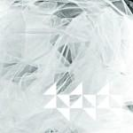

Music Reviews
-
St. Vincent Strange Mercy
Taking a leap both musically and lyrically, St. Vincent's most ambitious effort to date is also the most personal. With a new goal in mind, we are given something far more beautiful but no less clever than previous efforts.
Forrest Cardamenis gawks over -

Rihanna Talk That Talk
Queen of pop, Rihanna, returns with sixth studio album, Talk That Talk, and it appears she's only got one thing on her mind.
It doesn't take Joe Rivers long to figure out what it is... -

Matana Roberts Coin Coin Chapter One: Gens de Couleur Libres
The first part of Matana Roberts' Coin Coin cycle is a wildly ambitious free jazz record, deftly exploring several eras of African American history in one overwhelming emotional journey.
Stephen Wragg reviews... -

The Beach Boys The SMiLE Sessions
Listen to the Beach Boys sing an album from 2004 in 1967.
Sean Caldwell reviews... -

Sunn O))) øø Void
With copies exchanging hands between fans for fairly significant sums, distortion pedal defiling duo Sunn O))) have seen fit to re-release their second record øø Void. Was it worth it though?
Mark Davison feels abused and confused... -

Korallreven An Album by Korallreven
The Swedish duo's long-awaited debut merges previous singles with new material, yet somehow manages to sequence a scenic panorama worth getting lost into.
Juan Edgardo Rodríguez pops out the cork... -
Little Dragon Ritual Union
Ritual Union shows initial promise, but ultimately comes across uninspired and lacking ideas.
Joel Stanier reviews... -

Kate Bush 50 Words For Snow
An album of songs set against the backdrop of falling snow. One is about sex with a snowman. It's been six years since Aerial. Has it been worth the wait?
David John Wood feels chilled to the bone... -
Treefight for Sunlight A Collection of Vibrations For Your Skull
A band name and a record name that perfectly describe what you are in for.
Alan Shulman reviews... -
Holy Other With U
A gem of an EP, a prophecy for an entire genre, an emergence of a great producer: Holy Other.
Michael Iovino reviews...